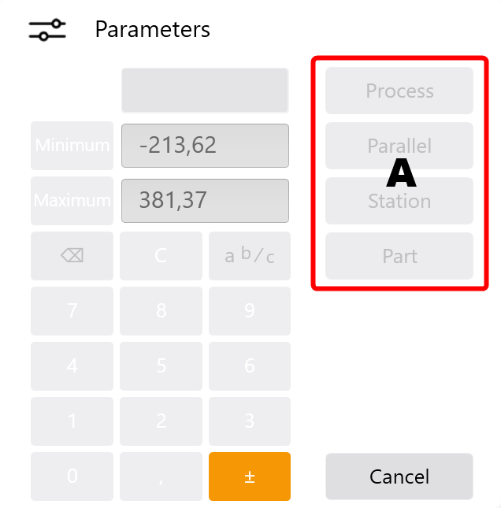

Zadávací dialog

V tomto dialogu mohou být provedeny korekce hodnot. Budou převzaty jen hodnoty, které leží v rozsahu zadaných minimálních a maximálních hodnot.

- Tlačítka Minimum a Maximum nastaví hodnotu na minimální nebo maximální přípustnou hodnotu.
- Tlačítko Standard zadanou hodnotu zase dosadí zpět na standardní hodnotu.
- Tlačítko Õ vymaže poslední znak uvedené hodnoty.
- Tlačítko C vymaže celou hodnotu.
- Tlačítkem a b/c mohou být příkladně uvedeny úhlové korekce ve stupních a minutách.
- Zadání: 90
- Tlačítko: a b/c
- Zadání: 15
- Tlačítko: a b/c
- Zadání 60
- Tlačítko ± obrátí znaménko hodnoty.
- Tlačítky A může být korekce přiřazena k příslušné funkci. Okna se potom automaticky zavře a nové hodnoty jsou aktivní.
- Proces
- Paralelně
- Stanice Stanice sestává z jednoho nebo několika segmentů horního a spodního nástroje.
- Dílec
Příklad:
90° 15' se zadá následovně.
Info: Tlačítky se v dialogu zobrazí jen relevantní funkce.
Zadání se převezme pro aktuální proces.
Zadání se převezme pro všechny ohyby se stejným úhlem na stejném řezu
Zadání se převezme pro všechny procesy aktuální stanice
Zadání se převezme pro všechny procesy obrobku